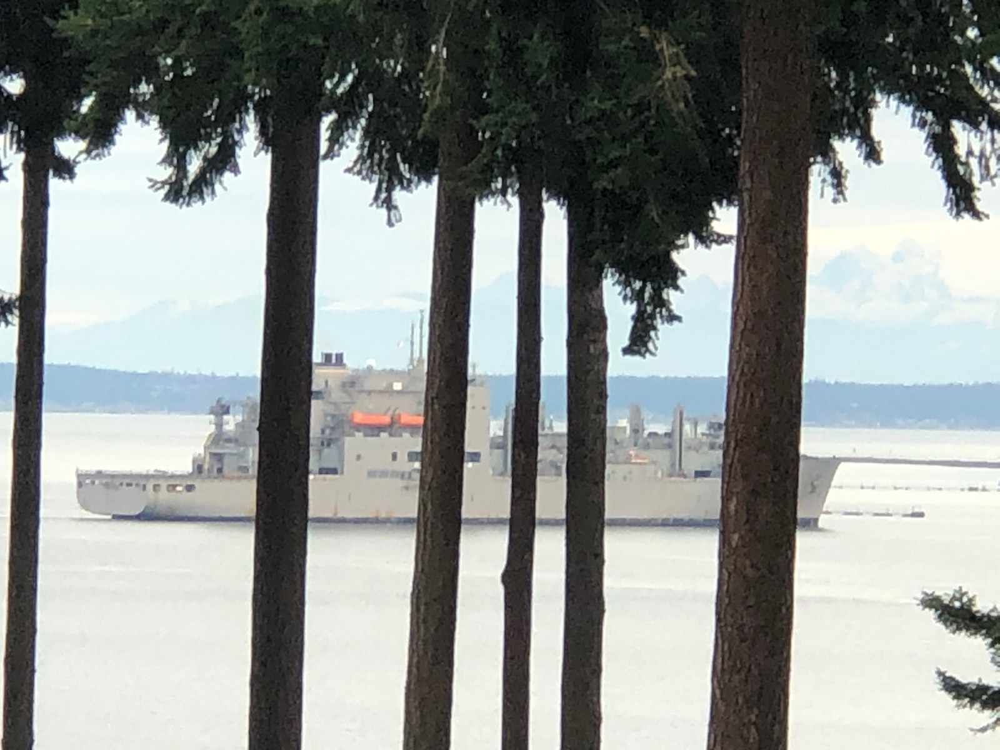
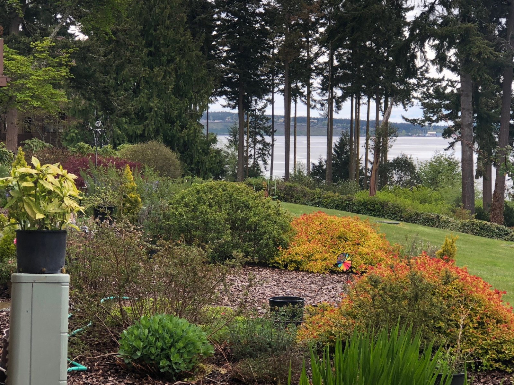
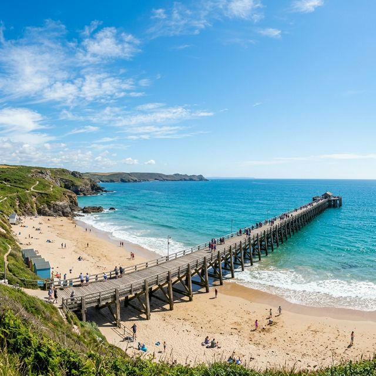

November 2023
As autumn settles across our beach community, there is a distinct energy in the air. Many things we have to be grateful for—our stunning natural surroundings, our dedicated neighbors, and the vibrant sense of community that makes Kala Point more than just a place to live; it's a place to belong.
This season has brought both change and momentum. Roofing work has started on Building 100, taking its next steps on our long-term maintenance plan. Our project, along with others, is crucial to preserving the integrity and value of our homes, and I thank everyone for their patience and support during this process. In early fall, our Annual Budget Meeting on November 21 offers an important opportunity for owners to participate (via in-person or live-streaming) in financial planning for the community's future. This year's budget reflects necessary steps to increase reserves for roofing, paving, and other major long-term needs. Your participation and your vote on these investment decisions reflect the priorities of our entire community.
I want to take a moment to recognize the spirit of teamwork that keeps us united. Whether it's neighbors helping each other with yard work (thank you, Richard & Jan! ), or simply lending a hand when a task arises, it is this sense of partnership that builds community. A warm welcome to all our new residents who joined us recently; we look forward to getting to know you. On behalf of the Board of Directors, I appreciate your ongoing commitment and support. Together, we are keeping Kala Point a community that reflects the best of the Pacific Northwest—thoughtful, welcoming, and resilient.

January 2024
As we welcome the new year, we sincerely thank you for your trust, engagement, guidance, and feedback that shape our community spirit on your behalf of all over at Kala Point, and we welcome this new year with dedicated excitement. Our common ground is more than just buildings; it's a living space shaped by our care, stewardship, and shared effort. This year, we continue to focus on maintaining what we have, planning wisely for the future, and making thoughtful improvements that ensure our community remains the sanctuary we cherish. As we begin this year's work, we reaffirm our commitment to clear communication and careful administrative oversight. Many ongoing projects are long-term investments in our community's health and stability, and we will continue updating everyone as they progress. Our goal is to ensure every dollar is well invested and serves the collective interests we share.
Your involvement—whether by attending meetings, becoming a part of our committees, or simply staying informed—is essential to our success. Recently, we heard shared that although some couldn't attend meetings, the people enjoy every email, every newsletter, every communication we send.
Hearing that was a nice—a reminder that engagement varies for everyone. What matters is that each of us stays informed and connected in a way that works for us, as we continue moving forward together into a great 2024.
March 2024
As the days get a bit longer and the first signs of spring emerge, March brings a hopeful feeling of progress. There is a sense of renewal—both in our surroundings and in how we support our community. There is much to say about this month, and we want to take a moment to say how much we appreciate the small, but meaningful shifts happening around us: bright morning sun, neighbors out walking again, and the first green buds pushing through the soil. This natural transition mirrors the work happening within KPCA.
Even in the quieter winter months, our community has been steadily preparing for the busier seasons ahead. We are focused on building maintenance, enhancing security, and strengthening the systems that keep everything running smoothly. March gives us a chance to take stock of our foundation and look forward with a sense of shared purpose.
Committees and landscapes partners are moving into spring readiness mode, and I want to acknowledge their hard work in keeping our community and its trees and shrubs healthy. We have several completed seasonal pruning and cleanup, and much budget go into tree care maintenance, preparing well before the vertical months have been at. These routine steps help us stay ahead of seasonal wear, protect our buildings and greenery, and ensure KPCA remains scenic and beautiful for all to enjoy. Much gratitude to James and his crew for their steady, thoughtful work as we transition into spring.

Stay updated with our latest community news.